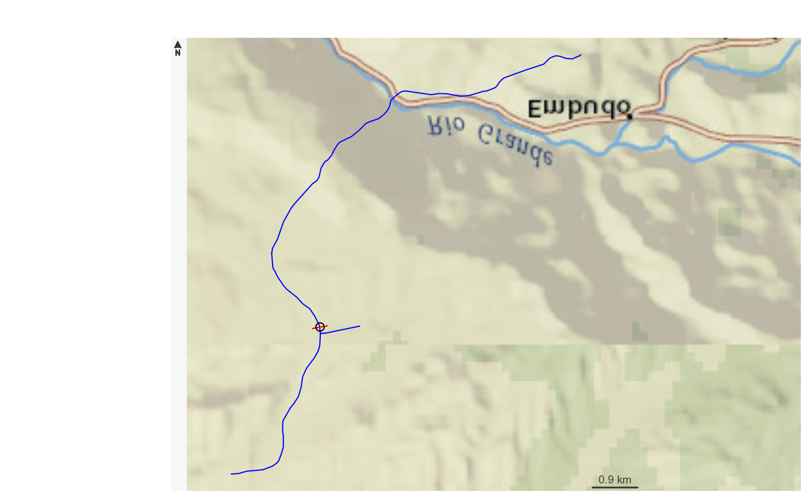

Uses a cross section retrieval web services to retrieve a cross section given a point and specified width. Orientation is determined based on direction of a the flowline found near point. This function uses a 10m Natioinal Elevation Dataset request on the back end.
get_xs_point(point, width, num_pts)sfc POINT including crs as created by:
sf::st_sfc(sf::st_point(.. ,..), crs)crs.
Cross section width in meters.
numeric number of points to retrieve along the cross section.
sf data.frame containing points retrieved.
# \donttest{
point <- sf::st_sfc(sf::st_point(x = c(-105.97218, 36.17592)), crs = 4326)
(xs <- get_xs_point(point, 300, 100))
#> Simple feature collection with 101 features and 4 fields
#> Geometry type: POINT
#> Dimension: XY
#> Bounding box: xmin: -105.9734 ymin: 36.1755 xmax: -105.9709 ymax: 36.1763
#> Geodetic CRS: WGS 84
#> # A tibble: 101 x 5
#> id distance_m elevation_m spatial_ref geometry
#> <chr> <dbl> <dbl> <int> <POINT [°]>
#> 1 0 0 1774. 0 (-105.9734 36.1755)
#> 2 1 2.41 1773. 0 (-105.9734 36.17551)
#> 3 2 4.81 1773. 0 (-105.9734 36.17552)
#> 4 3 7.22 1772. 0 (-105.9734 36.17552)
#> 5 4 9.63 1772. 0 (-105.9733 36.17553)
#> 6 5 12.0 1771. 0 (-105.9733 36.17554)
#> 7 6 14.4 1771. 0 (-105.9733 36.17555)
#> 8 7 16.8 1770. 0 (-105.9733 36.17556)
#> 9 8 19.3 1770. 0 (-105.9732 36.17556)
#> 10 9 21.7 1770. 0 (-105.9732 36.17557)
#> # ... with 91 more rows
bbox <- sf::st_bbox(xs) + c(-0.005, -0.005, 0.005, 0.005)
nhdplusTools::plot_nhdplus(bbox = bbox, cache_data = FALSE)
#> Found invalid geometry, attempting to fix.
#> Warning: No nhdarea features found
#> Warning: No waterbodies features found
#> Warning: No nonnetwork features found
#> Zoom: 16
#> Map tiles by Carto, under CC BY 3.0. Data by OpenStreetMap, under ODbL.
#> Audotdetect projection: assuming Google Mercator (epsg 3857)
plot(sf::st_transform(sf::st_geometry(xs), 3857), pch = ".", add = TRUE, col = "red")
plot(sf::st_transform(sf::st_sfc(point, crs = 4326), 3857), add = TRUE)

plot(xs$distance_m, xs$elevation_m)
# }